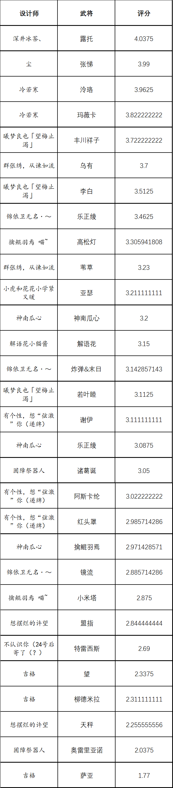

危机合约#2 逆境行动
其一
比赛时间：2025.1.6~2.2，其中1.6~1.26为设计阶段，1.27~2.2为评判阶段
设计阶段：
参赛选手选择任意角色，出处不限，对其人生低谷时期进行设计。每人至多提交三张武将设计。
武将上传至相册《危机合约#2 逆境行动参赛作品》并附注思路说明和选择的危机合约。
注意事项：
1.提交时间须为设计阶段开始日0时整至截止日24时整，超出此时间范围者无效，以相册显示时间为准。
2.参赛者须从公告二的危机合约中，为每张武将设计选择至少6级作为限制，提交时备注或在评论区附注。
3.设计阶段内可以随时重新上传武将设计。
4.须为参赛者比赛期间的新设计，不得抄袭或套用他人设计或旧设计。
5.请提交适合直接印刷的卡图。
评判阶段：
进入群共享文档对应表格打分。
所有群友都可以给参赛设计评分（1~5，可以使用任意小数位数），不自评，匿名评分。
参考评分标准：1分“有大问题”，2分“有些瑕疵”，3分“平平无奇”，4分“眼前一亮”，5分“旷世奇才”。
一张参赛作品的得分计算方式为以特殊规则去掉最高分和最低分之后的平均分。特殊规则：如果最高分与次高分之差不小于0.5则去掉，否则保留。最低分同理。
评判阶段中可以随时修改自己打的分数。
其二
####危机合约条目####
轻量化
I.所有描述字数之和不超过150（不含标点符号）。
II.……135……。
III.……120……。
沉郁顿挫
II.初始技能均可以按顺序触发下一个（若有）。
III.……（若无则改为触发首个）。
恍然呓语
II.描述包含三对内容不同的引号。
困兽之斗
II.描述包含“你不能”。
自由时点
II.描述不含“后”。
III.描述不含“时”和“后”。
杀谜百解（三）
I.在只有一幅扑克牌（不含大小王）的牌堆里，有可能战胜先手高达一号。
III.……一定能……。
年终总结
I.此条目视为以下任意条目之I级：杀谜百解（二）、不取对象、安分守己、自由身、两袖清风、生离死别、官方认证。
II.……之II级：杀谜百解（一/二）、标签化、不取对象、技多压身、各安其分、两袖清风、生离死别。
III.……之III级：杀谜百解（一/二）、标签化、无奈之举、技多压身、各安其分、两袖清风、生离死别。
##新合约追加##
恍然呓语
I.描述包含两对内容不同的引号。
自由时点
I.描述不含“时”或“后”
杀谜百解（三）
II.……一定能战平、有可能战胜……
年终追加
I.此条目视为以下任意条目之I级：不动干戈、出泥不染、贞良死节、宽以待人
II.……之II级：安分守己、自由身、……
III.……之III级：……
其三
比赛奖励：
一等奖：￥40（一份）
二等奖：￥20（两份）
三等奖：￥10（三份）
（各等级奖之同等对同一设计师不重复颁发，取分数低者顺延至下一等级；评分相等之情况，设计师给对方评分高者胜，若仍等则考虑排除的高低分，若又等则取合约等级之高者，若再等则取投稿时间之先者）
先驱：￥10（评分在3分以上的设计中交稿时间最早者，以设计阶段结束时相册显示时间为准）
tag王：￥10（评分在3分以上的设计中合约等级最高者；危机等级并列第一时奖给分数高者）
制衡：￥10（由 @阿巴阿巴 主观评判，褒奖平衡性最优者）
金扫把：￥6.66（由 @阿巴阿巴 酌情颁发，褒奖尽力而为的态度恭谦者）
插画奖：￥10（由 @阿巴阿巴 酌情颁发，至多三份，褒奖插画最合其胃口者）
比赛由 @阿巴阿巴 提供奖金支持，谢谢他 喵~
其四
内容已缺失，武将排名如图
